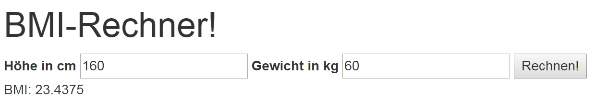

Der BMI-Rechner könnte in einer vereinfachten Variante wie folgt aussehen:
Gehen Sie bei Ihrer Implementation wie folgt vor:

Erstellen Sie eine weitere Variante des Rechners. Diese soll mit einer Razor View, welche den BMI anzeigt und die jeweilige „Stufe“ vom BMI hervorhebt, realisiert werden. Generieren Sie die BMI-Tabelle (siehe Bild) aus einem strukturierten Datenbestand. Als Basis könnte folgende Struktur dienen:
var data = new[]
{
new {Text = "starkes Untergewicht", Max=16.0},
new {Text = "mäßiges Untergewicht", Max=17.0},
new {Text = "leichtes Untergewicht", Max=18.5},
new {Text = "Normalgewicht", Max=25.0},
new {Text = "Präadipositas", Max=30.0},
new {Text = "Adipositas Grad I", Max=35.0},
new {Text = "Adipositas Grad II", Max=40.0},
new {Text = "Adipositas Grad III", Max=999.0},
};
Vergleichen Sie ihre Lösung mit der abgegeben Lösung.